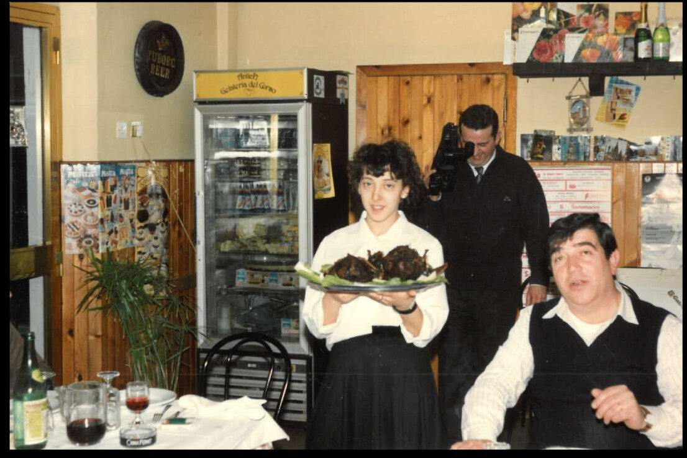

contatti & orari
Dove siamo.
Str. Sottomontana 37, a Borgo Maggiore, a cinque minuti dal centro storico della Repubblica di San Marino.

Indirizzo
Antica Trattoria Ugolini
Str. Sottomontana, 37
47893 Borgo Maggiore
Repubblica di San Marino
Prenotazioni
0549 875837
Chiama il fisso
335 733 6979
Chiama il cellulare
Chiamateci direttamente per gruppi numerosi o prenotazioni dell'ultim'ora.
trattoriaugolinirsm trattoriaugolinirsm@gmail.com
Per messaggi non urgenti, prenotazioni di gruppo, collaborazioni.
Orari di apertura
- Lunedì12:00 – 15:00
- MartedìChiuso
- Mercoledì19:00 – 22:30
- Giovedì12:00 – 15:00
19:00 – 22:30 - Venerdì12:00 – 15:00
19:00 – 22:30 - Sabato12:00 – 15:00
19:00 – 22:30 - Domenica12:00 – 15:00
19:00 – 22:30
Martedì chiuso. Mercoledì aperti solo a cena. Per prenotazioni tardive, una telefonata aiuta.
Come arrivare
Siamo lungo Str. Sottomontana, a metà strada tra il centro storico di San Marino e Borgo Maggiore. Parcheggio disponibile a pochi metri.
In auto Dall'autostrada A14, uscita Rimini Sud, poi superstrada per San Marino. 25 minuti.
A piedi Dal centro storico di San Marino, 10 minuti in discesa lungo Via Salita alla Rocca.
prenotazioni
Vi aspettiamo a tavola.
Per riservare un tavolo, chiama direttamente il fisso o il cellulare. Per gruppi superiori a otto persone, la telefonata è la via migliore.